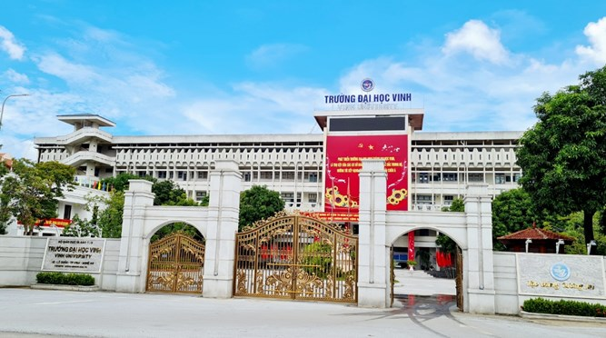
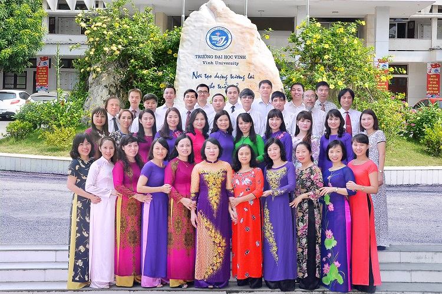

TRƯỜNG ĐẠI HỌC VINH - VINH UNIVERSITY
TRƯỜNG ĐẠI HỌC VINH GIỚI THIỆU
1. Lịch sử hình thành và phát triển
Trường Đại học Vinh được thành lập năm 1959 theo Nghị định số 375/NĐ của Bộ trưởng Bộ Giáo dục với tên gọi ban đầu là Phân hiệu Đại học Sư phạm Vinh. Ngày 29/02/1962, Bộ trưởng Bộ Giáo dục có Quyết định số 637/QĐ đổi tên Phân hiệu Đại học Sư phạm Vinh thành Trường Đại học Sư phạm Vinh. Ngày 25/4/2001, Thủ tướng Chính phủ có Quyết định số 62/2001/QĐ-TTg đổi tên Trường Đại học Sư phạm Vinh thành Trường Đại học Vinh. Ngày 11/07/2011, Thủ tướng Chính phủ có Công văn số 1136/TTg-KGVX đưa Trường Đại học Vinh vào danh sách xây dựng thành trường đại học trọng điểm quốc gia.

Là một trong những trường đại học đầu tiên của nền giáo dục cách mạng Việt Nam, Trường vinh dự được đóng trên quê hương của Chủ tịch Hồ Chí Minh - vùng địa linh nhân kiệt, có truyền thống hiếu học, yêu nước và cách mạng.
Từ khi thành lập đến nay, Trường đã trải qua 5 giai đoạn phát triển:
- Từ Phân hiệu Đại học Sư phạm Vinh đến Trường Đại học Sư phạm Vinh (1959 - 1965).
- Trường Đại học Sư phạm Vinh trong những năm sơ tán (1965 - 1973).
- Trường Đại học Sư phạm Vinh vượt qua khó khăn, từng bước đa ngành (1973 - 2001).
- Sự phát triển của Trường Đại học Vinh đa ngành (2001 - 2019).
- Xây dựng Trường Đại học Vinh thành Đại học Vinh, là trụ cột của các cơ sở giáo dục đại học khu vực Bắc Trung Bộ, hướng tới xếp hạng tốp 500 đại học hàng đầu châu Á (2019 - nay). br
Từ Trường Đại học Sư phạm Vinh đến Trường Đại học Vinh hôm nay là thành quả của sự phấn đấu liên tục, bền bỉ, sáng tạo, tự chủ của các thế hệ lãnh đạo, cán bộ, viên chức, học sinh, sinh viên và học viên của Nhà trường trong hơn 60 năm qua. Những thành quả đó khẳng định uy tín và vị thế của Trường Đại học Vinh trong hệ thống giáo dục đại học Việt Nam và trên thế giới.
Với tiền thân là Trường Đại học sư phạm Vinh, trải qua hơn 62 năm phấn đấu xây dựng và trưởng thành, với nhiều đóng góp xuất sắc cho nền giáo dục nước nhà, góp phần đáng kể vào sự nghiệp xây dựng Chủ nghĩa xã hội và bảo vệ Tổ quốc, sự nghiệp đổi mới đất nước, Nhà trường đã được Đảng và Nhà nước ghi nhận và tặng thưởng nhiều danh hiệu cao quý.
Nhà trường đã đào tạo trên 80.000 cử nhân sư phạm, cử nhân khoa học, kỹ sư; 6.500 thạc sĩ và hàng trăm tiến sĩ. Nhiều cựu sinh viên của Trường đã trở thành các nhà khoa học, chuyên gia đầu ngành, cán bộ quản lý tại các cơ sở giáo dục, đào tạo, các viện nghiên cứu, các trung tâm khoa học, công nghệ, kinh tế lớn trong nước và quốc tế.
Theo bảng xếp hạng các trường đại học trên thế giới của tổ chức CSIC, hằng năm Trường Đại học Vinh đều được xếp trong top 20 các cơ sở giáo dục đại học của Việt Nam. Trường Đại học Vinh đạt chuẩn 4 sao theo định hướng nghiên cứu theo Hệ thống đối sánh chất lượng giáo dục đại học (UPM) của 100 trường đại học hàng đầu châu Á (trong đó có nhiều tiêu chí đạt 5 sao). Theo bảng xếp hạng SCImago (SCImago Institutions Rankings) Trường Đại học Vinh xếp ở vị trí thứ 16 trong 22 trường đại học của Việt Nam.
2. Các lĩnh vực hoạt động
2.1. Hoạt động đào tạo
Là một trung tâm giáo dục đại học lớn của khu vực Bắc Trung Bộ, Trường Đại học Vinh được giao nhiệm vụ đào tạo cử nhân, kỹ sư trình độ đại học, đào tạo thạc sĩ, tiến sĩ, giáo dục phổ thông và bậc học mầm non.
Hiện tại, Trường đào tạo 57 ngành đại học (trong đó có 3 ngành đại học chất lượng cao), 38 chuyên ngành thạc sĩ, 17 chuyên ngành tiến sĩ (2). Ngoài ra, Trường Đại học Vinh còn có 3 trường trực thuộc (Trường THPT Chuyên, Trường Mầm non thực hành và Trường Tiểu học, Trung học cơ sở, Trung học phổ thông thực hành). Quy mô đào tạo của Trường là gần 35.000 học sinh, sinh viên, học viên, trong đó sinh viên, học viên chính quy là 22.000 người.
Trong 57 ngành đào tạo đại học, Trường Đại học Vinh có 14 ngành đào tạo giáo viên là các ngành truyền thống, cung cấp nguồn giáo viên chất lượng cao cho cả nước. Trong quá trình xây dựng và phát triển, chất lượng đào tạo luôn được Nhà trường quan tâm hàng đầu. Từ năm 2017, Nhà trường đã xây dựng và phát triển Chương trình đào tạo tiếp cận CDIO cho tất cả các ngành đào tạo đại học và chuyên ngành đào tạo sau đại học. Để triển khai Chương trình Giáo dục phổ thông mới, Trường đang tập trung xây dựng các mô hình đào tạo giáo viên nói riêng, đào tạo các nguồn nhân lực nói chung theo tiếp cận năng lực, đổi mới mạnh mẽ phương pháp giảng dạy, ứng dụng công nghệ thông tin, phát triển hệ thống hỗ trợ dạy học E-learning, các hình thức dạy học trực tuyến nhằm không ngừng nâng cao chất lượng đào tạo.
Công tác bồi dưỡng thường xuyên cũng được Nhà trường quan tâm đẩy mạnh với các chương trình bồi dưỡng phong phú, đa dạng. Đặc biệt, với sự hỗ trợ của Chương trình phát triển các trường sư phạm để nâng cao năng lực đội ngũ giáo viên và cán bộ quản lý cơ sở giáo dục phổ thông (ETEP), Nhà trường đã và đang đóng góp có hiệu quả công tác bồi dưỡng thường xuyên giáo viên các cấp học cho các tỉnh khu vực Bắc Trung Bộ và cả nước.
Nhà trường đã sớm triển khai các hoạt động đảm bảo chất lượng. Năm 2017, Nhà trường đã được công nhận đạt tiêu chuẩn kiểm định chất lượng cơ sở giáo dục. Từ năm 2018 đến nay đã có 8 chương trình đào tạo đại học chính quy được đánh giá ngoài theo Bộ tiêu chuẩn Quốc gia và được công nhận đạt chuẩn chất lượng giáo dục (Quản trị kinh doanh, Ngôn ngữ Anh, Kỹ thuật xây dựng, GD tiểu học, GD mầm non, Kế toán, Luật kinh tế, Sư phạm Hoá học). Có 2 chương trình đào tạo đại học chính quy được đánh giá ngoài theo bộ tiêu chuẩn AUN-QA là Sư phạm Toán học và Công nghệ thông tin.
2.2. Nghiên cứu khoa học và hợp tác quốc tế
Hoạt động nghiên cứu khoa học của Trường tập trung trên 3 lĩnh vực: khoa học cơ bản, khoa học giáo dục và khoa học công nghệ, ứng dụng - triển khai. Nhà trường đã xây dựng Chiến lược phát triển khoa học và công nghệ giai đoạn 2018 - 2020, tầm nhìn đến năm 2025; ban hành Quy định về quản lý các hoạt động khoa học và công nghệ.
Trong những năm gần đây, cán bộ, giảng viên của Trường đã chủ trì và tham gia triển khai nhiều dự án khoa học - công nghệ của Chính phủ, các đề tài, nhiệm vụ nghiên cứu cấp Bộ, cấp Nhà nước. Trung bình hàng năm, Trường thực hiện 120 đề tài/dự án các cấp với tổng kinh phí gần 9,4 tỷ đồng, chiếm khoảng 4% tổng kinh phí hoạt động của Nhà trường; trong đó có 48,65% kinh phí thực hiện đề tài/dự án cấp nhà nước, cấp bộ từ nguồn ngân sách Trung ương, 14,04% kinh phí thực hiện đề tài/dự án cấp tỉnh từ nguồn ngân sách địa phương, 37,31% là đề tài cấp trường.
Nhà trường có quan hệ hợp tác đào tạo, nghiên cứu khoa học, bồi dưỡng cán bộ với hàng chục cơ sở giáo dục đại học, các tổ chức khoa học quốc tế từ Châu Âu, Châu Á, Châu Mỹ và Châu Úc. Nhà trường cũng đã chủ trì tổ chức nhiều hội thảo khoa học khu vực và quốc tế; tạo lập được các nhóm nghiên cứu, nhóm nghiên cứu mạnh với các nhà khoa học đầu ngành như: nhóm nghiên cứu Quang học - Quang phổ, nhóm nghiên cứu Xác suất và Thống kê, nhóm nghiên cứu Ngôn ngữ học... ban hành Quy định về tổ chức và hoạt động đối với nhóm nghiên cứu của Trường Đại học Vinh. Nhà trường đã có chính sách mạnh về việc khen thưởng cho các tác giả có công bố quốc tế hàng năm. Trong 5 năm gần đây, Trường luôn nằm trong tốp 15 trường đại học có công bố quốc tế nhiều nhất ở Việt Nam. Năm 2020, các nhà khoa học Trường Đại học Vinh đã công bố 157 công trình nghiên cứu trên các tạp chí quốc tế thuộc danh mục Web of Science và Scopus, tăng hơn gấp đôi so với năm 2019; vượt chỉ tiêu Nghị quyết Đại hội Đảng bộ trường lần thứ XXXII đề ra (đạt mốc 100 bài/năm vào năm 2022).
Hoạt động nghiên cứu khoa học của sinh viên được quan tâm đẩy mạnh. Từ năm học 2018 - 2019, Nhà trường đổi mới hoạt động nghiên cứu khoa học của sinh viên. Số đề tài tham gia các hội nghị, hội thảo khoa học sinh viên và đạt giải thưởng "Tài năng khoa học trẻ Việt Nam", giải thưởng “Sinh viên Nghiên cứu khoa học” cấp Bộ ngày càng tăng. Trong 5 năm qua, đã có hàng trăm đề tài nghiên cứu khoa học của sinh viên được thực hiện.
Tạp chí Khoa học của Trường mỗi năm ra 4 kỳ có chất lượng tốt, hiện đang được nâng cấp theo các tiêu chuẩn của Hệ thống cơ sở dữ liệu ASEAN (ACI) (phấn đấu chuyên san Khoa học Tự nhiên đạt chuẩn ACI vào năm 2021).
Hoạt động hợp tác quốc tế của Trường được đẩy mạnh. Trường đã ký kết các chương trình hợp tác song phương với nhiều trường đại học lớn trên thế giới như: Đại học Zielona Gora (Ba Lan), Đại học Hull (Anh), Đại học Postdam (Đức), Đại học South Florida, Đại học San Jose (Hoa Kỳ), Đại học Victoria (Australia), Đại học Rajabhat Maha Sarakham, Trường Đại học Nakhon Phanom (Thái Lan), Đại học Pukyong (Hàn Quốc)... tạo điều kiện thuận lợi cho cán bộ, giảng viên, sinh viên, học viên, nghiên cứu sinh tham gia học tập, nghiên cứu khoa học.
2.3. Đội ngũ cán bộ

Nhà trường luôn coi công tác cán bộ, chất lượng đội ngũ cán bộ là yếu tố then chốt quyết định sự phát triển của Nhà trường. Trường luôn thực hiện tốt công tác quy hoạch, tạo nguồn, tuyển dụng, đào tạo, bồi dưỡng, bổ nhiệm, sử dụng và đánh giá cán bộ; luôn chăm lo đời sống vật chất, tinh thần cho cán bộ, giảng viên.
Cơ cấu tổ chức của Trường gồm 3 trường thuộc, 4 viện, 4 khoa, 1 Trường THPT Chuyên, 1 Trường Thực hành sư phạm; có 24 phòng ban, trung tâm, trạm và 2 Văn phòng đại diện tại TP. Hồ Chí Minh và tỉnh Thanh Hóa.
Hiện nay, Nhà trường có đội ngũ cán bộ cơ bản đủ về số lượng, đạt chuẩn về chất lượng, đồng bộ về cơ cấu với 1.036 cán bộ, viên chức, trong đó có 50 giáo sư, phó giáo sư, 300 tiến sĩ, 495 thạc sĩ... Trường có 381 giảng viên hạng III; 135 giảng viên hạng II; 50 giảng viên hạng I. Tỷ lệ giảng viên có trình độ tiến sĩ trở lên là 50%, đơn vị có tỷ lệ giảng viên có trình độ tiến sĩ cao nhất là Viện Sư phạm Tự nhiên với 80,51%, Viện Sư phạm Xã hội với 73,33% giảng viên có trình độ tiến sĩ.
2.4. Cơ sở vật chất
Trường Đại học Vinh có Cơ sở chính tại số 182, đường Lê Duẩn, thành phố Vinh, tỉnh Nghệ An. Trong những năm qua, với sự quan tâm đầu tư của Chính phủ, Bộ Giáo dục và Đào tạo và sự giúp đỡ của tỉnh Nghệ An, tỉnh Hà Tĩnh, Nhà trường đã có hệ thống cơ sở vật chất hiện đại, cơ bản đáp ứng được yêu cầu của Nhà trường trong thời kỳ hội nhập.
Quy hoạch đất để xây dựng Trường đã được phê duyệt là 130 ha, trong đó diện tích đã được xây dựng và đưa vào sử dụng là 44,12 ha.
Hiện nay, Trường có 5 cơ sở:
+ Cơ sở 1 tại số 182 đường Lê Duẩn, thành phố Vinh, tỉnh Nghệ An; diện tích gần 14 ha. Đây là nơi tập trung hệ thống quản lý nhà trường, văn phòng làm việc của các đơn vị trong trường, hệ thống phòng học, các phòng thí nghiệm - thực hành, thư viện, ký túc xá, trạm y tế, sân vận động, nhà tập đa năng...
+ Cơ sở 2: Hiện tại là nơi đào tạo của Viện Nông nghiệp và Tài nguyên, Khoa Giáo dục Thể chất, Trung tâm Giáo dục Quốc phòng và An ninh Trường Đại học Vinh, Làng sinh viên tại xã Nghi Ân, thành phố Vinh và xã Nghi Phong, huyện Nghi Lộc, tỉnh Nghệ An với diện tích đã đưa vào sử dụng là 19,2 ha.
+ Cơ sở 3: Trung tâm Thực hành nuôi trồng Thủy sản mặn - lợ tại xã Xuân Trường, huyện Nghi Xuân, tỉnh Hà Tĩnh; diện tích 9,3 ha.
+ Cơ sở 4: Trung tâm Thực hành nuôi trồng Thủy sản nước ngọt tại thị trấn Hưng Nguyên, huyện Hưng Nguyên, tỉnh Nghệ An; diện tích 1,4 ha.
+ Cơ sở 5: Khu Ký túc xá sinh viên tại phường Hưng Bình, thành phố Vinh, tỉnh Nghệ An; diện tích 0,6 ha.
Trường Đại học Vinh được đánh giá là cơ sở giáo dục đại học có cơ sở vật chất vào tốp đầu của cả nước. Trường có: 10 hội trường, phòng học lớn trên 200 chỗ; 36 phòng học từ 100 đến 200 chỗ; 85 phòng học từ 50 đến 100 chỗ; 155 phòng học dưới 50 chỗ; 16 phòng học đa phương tiện; 78 phòng làm việc của các đơn vị chức năng; 14 phòng làm việc của GS, PGS, giảng viên cơ hữu; 2 thư viện, trung tâm học liệu; 3 trung tâm nghiên cứu, phòng thí nghiệm, thực nghiệm, cơ sở thực hành, thực tập, luyện tập. Hệ thống phòng học được trang bị đầy đủ tiện nghi cho giảng dạy và học tập.
Trung tâm Thông tin - Thư viện Nguyễn Thúc Hào là thư viện lớn nhất khu vực Bắc miền Trung, là một tòa nhà 7 tầng với diện tích sàn gần 9.000 m2 gồm không gian học tập tầng 1, 6 phòng học, 1 phòng xử án mô phỏng, 3 phòng máy tính, 8 kho sách và phòng đọc với gần 1.500 chỗ ngồi. Thư viện hiện nay có hệ thống mượn - trả sách tự động; hệ thống trả sách 24/7; hệ thống máy tính; phần mềm quản lý thư viện Kipos; máy scan - số hóa. Không gian học tập với đầy đủ các phương tiện hiện đại, máy tính kết nối mạng cho sinh viên tự học, đáp ứng yêu cầu chương trình đào tạo tiếp cận theo CDIO. Tài liệu gồm có 16.118 tên với 175.095 cuốn; 16.191 luận văn thạc sĩ và 4.652 luận án tiến sĩ. Thư viện số tại địa chỉ http://thuvien.vinhuni.edu.vn/ cung cấp 21.021 tài liệu; trong đó tạp chí khoa học nước ngoài có thể truy cập cơ sở dữ liệu điện tử Proquest Center và các cơ sở dữ liệu điện tử khác có liên kết.
Trường có hệ thống hạ tầng công nghệ thông tin hiện đại, bao gồm: Hệ thống hạ tầng mạng gồm trục kết nối 15 tòa nhà bằng 5 đường truyền với độ dài gần 10km đảm bảo tốc độ kết nối 1Gbps cho hơn 1.000 máy tính của Nhà trường. Hệ thống mạng wifi với hơn 250 điểm truy cập được lắp đặt trong khuôn viên Nhà trường, các phòng học, phòng thí nghiệm, sân chơi, bãi tập, ký túc xá... hiện đang phục vụ miễn phí cho cán bộ và sinh viên. Hệ thống camera được lắp đặt tại các vị trí, góp phần đảm bảo công tác an ninh, trật tự trong Nhà trường.
Trung tâm Thực hành - Thí nghiệm với 50 phòng thí nghiệm được quy hoạch phù hợp với các ngành đào tạo theo tiếp cận CDIO, trang thiết bị hiện đại, được bổ sung thường xuyên. Ngoài ra, Trường còn có xưởng thực tập, thực hành hiện đại; phòng thực hành nhạc họa; vườn ươm, ao nuôi thực nghiệm đảm bảo phục vụ tốt công tác đào tạo và nghiên cứu khoa học của cán bộ, giảng viên, sinh viên, học viên, nghiên cứu sinh. Đặc biệt, Trường Đại học Vinh đã xây dựng được hệ thống các "phòng thí nghiệm phổ thông" khá hoàn chỉnh để phục vụ đào tạo sinh viên khối ngành đào tạo giáo viên.
Ký túc xá sinh viên có 775 phòng ở, đáp ứng nhu cầu phục vụ cho hơn 4.200 học sinh, sinh viên, học viên; trong đó: Ký túc xá Cơ sở I có 315 phòng ở; Khu nhà ở Hưng Bình có 136 phòng ở; Trung tâm Giáo dục Quốc phòng và An ninh Trường Đại học Vinh có 84 phòng ở và Làng Sinh viên Cơ sở II có 240 phòng ở. Cơ sở vật chất tại Ký túc xá được đầu tư khang trang, sạch đẹp, các phòng đều có máy nước nóng lạnh, điều hòa nhiệt độ... an ninh trật tự được đảm bảo.
Trạm Y tế của Trường được bố trí khuôn viên riêng, có 8 phòng làm việc với đội ngũ 11 y, bác sỹ, với đầy đủ cơ sở vật chất, trang thiết bị hiện đại và thuốc, vật tư y tế đáp ứng tốt nhu cầu chăm sóc sức khoẻ ban đầu và khám, chữa bệnh cho cán bộ, viên chức và học sinh, sinh viên, học viên trong Trường.
Nhà ăn cho cán bộ, sinh viên được xây dựng, tổ chức ở cả Cơ sở I và Cơ sở II của Nhà trường, phục vụ chủ yếu cho hơn 1.000 sinh viên ở tập trung trong các Ký túc xá sinh viên. Nhà ăn đảm bảo an toàn vệ sinh thực phẩm, chất lượng suất ăn, khẩu phần ăn của sinh viên theo quy định; niêm yết thực đơn bữa ăn của từng ngày, giá cả đồ dùng sinh hoạt thiết yếu, văn phòng phẩm phục vụ sinh viên tại các quầy bán hàng.
Ngoài cơ sở vật chất phục vụ học tập, nghiên cứu, sinh hoạt, Nhà trường còn có hệ thống sân chơi, bãi tập phục vụ đào tạo ngành Giáo dục Thể chất và môn Thể dục thể thao cho sinh viên toàn Trường. Đây cùng là nơi tổ chức các giải thể thao của cán bộ, sinh viên; nơi để cán bộ, giảng viên, sinh viên, học viên, nghiên cứu sinh rèn luyện thể chất, rèn luyện sức khỏe.
2.5. Công tác kế hoạch - tài chính
Các hoạt động tài chính của Nhà trường hiện nay đang thực hiện theo Luật kế toán sửa đổi 2015; Nghị định số 25/2017/NĐ-CP; Thông tư số 107/2017/TT-BTC. Nhà trường thực hiện tốt việc công khai, minh bạch mọi hoạt động, góp phần thực hành tiết kiệm, phòng, chống tham nhũng, lãng phí. Công tác điều hành ngân sách đảm bảo hiệu quả, đúng pháp luật. Hàng năm, Nhà trường sửa đổi, bổ sung Quy chế chi tiêu nội bộ để phù hợp với tình hình thực tế, đảm bảo an toàn thu nhập cho cán bộ, trích lập các quỹ theo đúng quy định.
Nhà trường đã tổ chức quản lý và khai thác các nguồn thu hiệu quả, quản lý công tác chi đúng quy định. Công tác kế hoạch và dự toán đi vào nề nếp, giúp cho việc quản lý, điều hành của Nhà trường hiệu quả và trôi chảy. Thực hiện có hiệu quả quy trình mua sắm và quản lý tài sản. Hoàn thành việc giải ngân các nguồn kinh phí đúng tiến độ, đạt hiệu quả. Nhà trường nghiêm túc thực hiện 3 công khai theo quy định của Bộ Giáo dục và Đào tạo; công tác thanh tra, kiểm toán thực hiện đúng quy định, chu kỳ, niên độ. Hiện nay, tổng giá trị tài sản bao gồm nhà cửa, vật kiến trúc... của Nhà trường trị giá khoảng trên 2.400 tỷ đồng.
3. Định hướng phát triển chung
Nghị quyết Đại hội đại biểu Đảng bộ Trường Đại học Vinh lần thứ XXXII nhiệm kỳ 2020 - 2025 đã xác định tầm nhìn chiến lược và định hướng phát triển chung của Nhà trường là: "Phát triển Trường Đại học Vinh thành Đại học Vinh, là trụ cột của các cơ sở giáo dục đại học khu vực Bắc Trung Bộ, hướng tới xếp hạng tốp 500 đại học hàng đầu châu Á". Xây dựng Trường Đại học Vinh thành một cơ sở giáo dục đại học năng động, sáng tạo, chuyên nghiệp, tự do học thuật trên tinh thần dân chủ, tự chủ, bình đẳng với mục tiêu cụ thể năm 2021 thành lập Trường Sư phạm, Trường Kinh tế, Trường Khoa học Xã hội và Nhân văn, Trường Trực tuyến thuộc Trường Đại học Vinh; đến năm 2025 Nhà trường đủ điều kiện cơ bản để xếp hạng tốp 500 đại học hàng đầu châu Á.
Nhà trường nghiêm túc triển khai thực hiện các chủ trương, đường lối của Đảng, chính sách, pháp luật của Nhà nước, đặc biệt là Luật Giáo dục Đại học số 08/2012/QH13, Luật sửa đổi, bổ sung một số điều của Luật Giáo dục Đại học số 34/2018/QH14, Nghị định số 99/2019/NĐ-CP ngày 30/12/2019 của Chính phủ Quy định chi tiết và hướng dẫn thi hành một số điều của Luật sửa đổi, bổ sung một số điều của Luật Giáo dục đại học; Nghị quyết số 88/2014/QH13 của Quốc hội về đổi mới chương trình, sách giáo khoa giáo dục phổ thông; các nhiệm vụ của Chương trình phát triển các trường sư phạm để nâng cao năng lực đội ngũ giáo viên và cán bộ quản lý cơ sở giáo dục phổ thông (ETEP)... để phát triển Trường thành Đại học, góp phần giải quyết những vấn đề lớn trong đào tạo nguồn nhân lực theo nhu cầu xã hội, đáp ứng nhu cầu thế giới việc làm cho tất cả các khối ngành, đặc biệt là khối ngành đào tạo giáo viên; phát triển khối ngành đào tạo giáo viên của Nhà trường theo định hướng nghiên cứu./.